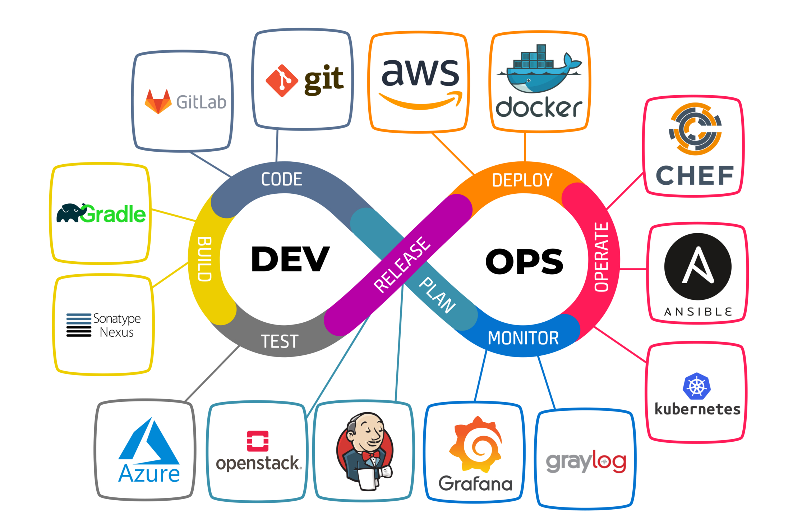

Introdução ao DevOps
O termo DevOps surge como uma resposta à necessidade de maior agilidade e colaboração entre as equipes de desenvolvimento (Dev) e operações (Ops). Historicamente, essas áreas operavam em silos, o que resultava em gargalos produtivos e falhas na entrega de valor ao cliente final. Com a ascensão da computação em nuvem e das metodologias ágeis, o DevOps consolidou-se como um paradigma essencial para organizações que buscam alta performance em software.

2 Conceitos e Perspectivas
O DevOps não é apenas uma ferramenta, mas uma mudança cultural e organizacional fundamentada na automação e na comunicação contínua. Ele é frequentemente descrito como a integração entre o desenvolvimento de software, as operações de TI e o controle de qualidade.
2.1 Integração com Ágil e Nuvem
A convergência entre práticas ágeis, serviços em nuvem e DevOps é um dos pilares para a entrega contínua. Enquanto o Ágil foca na flexibilidade do desenvolvimento, o Cloud provê a infraestrutura elástica necessária para que o DevOps automatize o ciclo de vida da aplicação.
2.2 Perspectivas Emergentes
Existem múltiplas perspectivas sobre a adoção do DevOps, que variam desde o foco puramente técnico em automação até abordagens centradas em pessoas e processos organizacionais. Mais recentemente, o conceito evoluiu para o DevSecOps, que integra práticas de segurança desde as fases iniciais do desenvolvimento.
3 Práticas e Ferramentas
As práticas de DevOps visam reduzir o tempo entre a alteração de um sistema e sua colocação em produção, mantendo a alta qualidade.
3.1 Práticas Principais
Dentre as capacidades e práticas mais citadas na literatura, destacam-se:
- Integração Contínua (CI) e Entrega Contínua (CD): Automação do build, testes e deploy.
- Monitoramento Contínuo: Observabilidade do sistema em tempo real para identificação proativa de falhas.
- Infraestrutura como Código (IaC): Gerenciamento de servidores e redes via scripts.
3.2 Ecossistema de Ferramentas
Embora o DevOps seja cultural, ele é sustentado por um ecossistema robusto de ferramentas que facilitam a automação em todas as etapas, desde o controle de versão até a orquestração de containers e segurança.
4 Benefícios e Desafios
A adoção do DevOps traz impactos significativos na eficiência das organizações de software.
4.1 Benefícios Observados
Estudos indicam que o DevOps melhora a frequência de implantação e reduz o tempo médio de recuperação (MTTR) de falhas. Além disso, proporciona maior estabilidade aos sistemas e aumenta a satisfação da equipe ao reduzir tarefas manuais repetitivas.
4.2 Desafios de Adoção
Apesar dos benefícios, a transição para o DevOps enfrenta barreiras, sendo a resistência cultural um dos desafios mais críticos. A necessidade de novas habilidades técnicas e a complexidade na integração de ferramentas legadas também são pontos de atenção citados por profissionais da área.
5 Exemplos e Estudos de Caso
A aplicação do DevOps na prática pode ser observada em diversos setores. Estudos de caso múltiplos em empresas mostram que a maturidade na adoção varia conforme o contexto do negócio, mas todas convergem para o uso de automação para acelerar o time-to-market. Relatos de empresas indicam que, após a adoção, houve uma melhoria notável na colaboração interdepartamental e na qualidade percebida pelo usuário final.
6 Conclusão
O DevOps representa uma evolução necessária na engenharia de software para lidar com a complexidade e a velocidade do mercado atual. Ao unir conceitos de cultura, práticas de automação e foco em medição, as organizações conseguem entregar software de forma mais rápida e confiável. No entanto, o sucesso depende de um equilíbrio entre a escolha das ferramentas corretas e a transformação das mentalidades organizacionais.
Referências Bibliográficas:
AMARO, R.; PEREIRA, R.; DA SILVA, M. D. Capabilities and Practices in DevOps: A Multivocal Literature Review. IEEE Transactions on Software Engineering, v. 49, n. 2, p. 883-901, 2023.
AOUNI, F. E. et al. A systematic literature review on Agile, Cloud, and DevOps integration: Challenges, benefits. Information and Software Technology, v. 177, 107569, 2025.
EBERT, C.; HOCHSTEIN, L. DevOps in Practice. IEEE Software, v. 40, n. 2, p. 29-36, 2023.
FAUSTINO, J. et al. DevOps benefits: A systematic literature review. Software: Practice and Experience, v. 52, n. 9, p. 1905-1926, 2022.
GALL, M.; PIGNI, F. Taking DevOps mainstream: a critical review and conceptual framework. European Journal of Information Systems, v. 31, n. 5, p. 548-567, 2021.
GHANTOUS, G.; GILL, A. DevOps: Concepts, Practices, Tools, Benefits and Challenges. [S.l.]: IEEE, 2017.
KHAN, M. S. et al. Critical Challenges to Adopt DevOps Culture in Software Organizations: A Systematic Review. IEEE Access, v. 10, p. 14339-14349, 2022.
LEITE, L. A. F. et al. A Survey of DevOps Concepts and Challenges. ACM Computing Surveys (CSUR), v. 52, n. 6, p. 1-35, 2019.
LWAKATARE, L. E. et al. DevOps in practice: A multiple case study of five companies. Information and Software Technology, v. 114, p. 217-230, 2019.
PEDRA, M. L.; DA SILVA, M. F.; AZEVEDO, L. DevOps Adoption: Eight Emergent Perspectives. ArXiv, 2021.
PRATES, L.; PEREIRA, R. DevSecOps practices and tools. International Journal of Information Security, v. 24, 2024.
RIUNGU-KALLIOSAARI, L. et al. DevOps Adoption Benefits and Challenges in Practice: A Case Study. *In*: International Conference on Product-Focused Software Process Improvement, 2016. p. 590-597.
SENAPATHI, M.; BUCHAN, J.; OSMAN, H. DevOps Capabilities, Practices, and Challenges: Insights from a Case Study. *In*: Proceedings of the 22nd International Conference on Evaluation and Assessment in Software Engineering, 2018.
ZHU, L.; BASS, L.; CHAMPLIN-SCHARFF, G. DevOps and Its Practices. IEEE Software, v. 33, n. 3, p. 32-34, 2016.